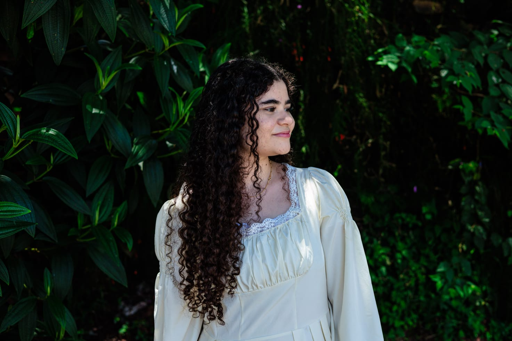

Desenvolvedor Full-Stack | Apaixonado por tecnologia e programação
Meu nome é Ana Carolina, tenho 20 anos e sou uma mulher apaixonada por tecnologia e inovação...
Meu nome é Ana Carolina, tenho 20 anos e sou uma mulher apaixonada por tecnologia e inovação. Desde muito cedo, me interessei por como softwares e programas podem transformar o mundo, e desde então venho buscando me desenvolver cada vez mais nessa área.
Atualmente, estou no 4º semestre do curso de Análise e Desenvolvimento de Sistemas e me dedico a ampliar meus conhecimentos tanto em desenvolvimento back-end quanto front-end, com o objetivo de me tornar uma desenvolvedora Full Stack completa.
Tenho grande interesse em aprender novas tecnologias e aplicar as melhores práticas na construção de projetos pessoais e coletivos, sempre com muita dedicação e foco na qualidade e usabilidade. Além disso, acredito no poder da colaboração e estou sempre aberta a parcerias, especialmente em iniciativas que apoiem comunidades menos favorecidas, onde a tecnologia pode gerar impacto social.
Criação de páginas estruturadas com HTML5, estilizadas com CSS3 (Flexbox e Grid) e responsividade.
Experiência com PostgreSQL e MySQL, garantindo integridade e performance.
Dashboards interativos com Power BI para análise de dados estratégicos.
Curso técnico em Manutenção e Suporte de Informática – SENAI Horto (2021–2023).
Continuar crescendo como desenvolvedora Full Stack, com foco em React, Node.js, AWS, machine learning e DevOps. Acredito que o aprendizado contínuo e a colaboração são fundamentais para evoluir e contribuir para a comunidade.